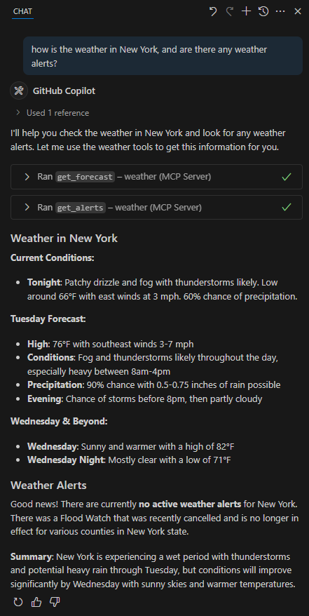
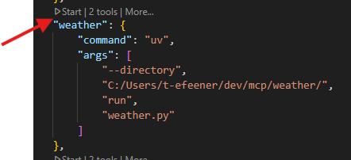
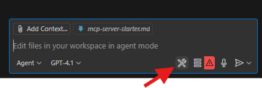
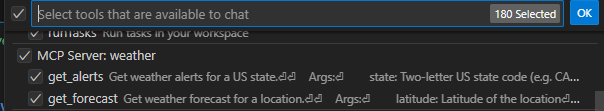
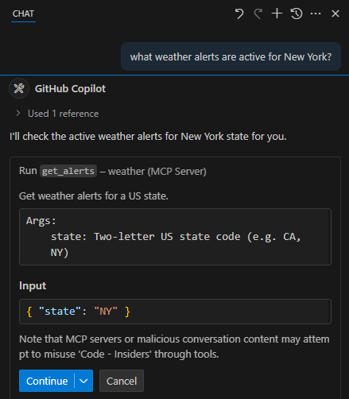

Build Your Own MCP Server¶
In this tutorial, we'll build a simple MCP (Model Context Protocol) weather server and connect it to VS Code with GitHub Copilot. We'll start with a basic setup, and then progress to more complex use cases.
Lab Overview 📋¶
Duration: 60-90 minutes
Difficulty: Intermediate
This lab is mainly based on the Model Context Protocol's quickstart guide to create an MCP server, with additional VS Code integration guides, screenshots, and step-by-step instructions for GitHub Copilot integration.
What we'll be building¶
Many LLMs do not currently have the ability to fetch live weather forecasts and severe weather alerts. Let's use MCP to solve that!
We'll build a server that exposes two tools: get-alerts and get-forecast. Then we'll connect the server to VS Code through the MCP configuration:

This guide focuses on VS Code integration. While servers can connect to any MCP client, we've chosen VS Code here because it's our primary IDE and offers excellent integration with GitHub Copilot.
Prerequisites¶
This demonstration assumes you have familiarity with Large Language Models (LLMs).
Before we start, make sure you have:
- VS Code installed with the GitHub Copilot extension enabled
- Basic familiarity with your chosen programming language. and its installation
- Understanding of REST APIs and JSON
Core MCP Concepts¶
MCP servers can provide three main types of capabilities:
- Resources: File-like data that can be read by clients (like API responses or file contents)
- Tools: Functions that can be called by the LLM (with user approval)
- Prompts: Pre-written templates that help users accomplish specific tasks
This tutorial will primarily focus on tools.
Implementation¶
Choose your preferred programming language to build the MCP server:
Let's get started with building our weather server! You can find the complete code for what we'll be building here.
Python System requirements¶
- Python 3.10 or higher installed
- You must use the Python MCP SDK 1.2.0 or higher
Set up your environment¶
First, let's install uv and set up our Python project and environment:
Make sure to restart your terminal afterwards to ensure that the uv command gets picked up.
Now, let's create and set up our project:
Building your server¶
Importing packages and setting up the instance¶
Add these to the top of your weather.py:
from typing import Any
import httpx
from mcp.server.fastmcp import FastMCP
# Initialize FastMCP server
mcp = FastMCP("weather")
# Constants
NWS_API_BASE = "https://api.weather.gov"
USER_AGENT = "weather-app/1.0"
The FastMCP class uses Python type hints and docstrings to automatically generate tool definitions, making it easy to create and maintain MCP tools.
Helper functions¶
Next, let's add our helper functions for querying and formatting the data from the National Weather Service API:
async def make_nws_request(url: str) -> dict[str, Any] | None:
"""Make a request to the NWS API with proper error handling."""
headers = {
"User-Agent": USER_AGENT,
"Accept": "application/geo+json"
}
async with httpx.AsyncClient() as client:
try:
response = await client.get(url, headers=headers, timeout=30.0)
response.raise_for_status()
return response.json()
except Exception:
return None
def format_alert(feature: dict) -> str:
"""Format an alert feature into a readable string."""
props = feature["properties"]
return f"""
Event: {props.get('event', 'Unknown')}
Area: {props.get('areaDesc', 'Unknown')}
Severity: {props.get('severity', 'Unknown')}
Description: {props.get('description', 'No description available')}
Instructions: {props.get('instruction', 'No specific instructions provided')}
"""
Implementing tool execution¶
The tool execution handler is responsible for actually executing the logic of each tool. Let's add it:
@mcp.tool()
async def get_alerts(state: str) -> str:
"""Get weather alerts for a US state.
Args:
state: Two-letter US state code (e.g. CA, NY)
"""
url = f"{NWS_API_BASE}/alerts/active/area/{state}"
data = await make_nws_request(url)
if not data or "features" not in data:
return "Unable to fetch alerts or no alerts found."
if not data["features"]:
return "No active alerts for this state."
alerts = [format_alert(feature) for feature in data["features"]]
return "\n---\n".join(alerts)
@mcp.tool()
async def get_forecast(latitude: float, longitude: float) -> str:
"""Get weather forecast for a location.
Args:
latitude: Latitude of the location
longitude: Longitude of the location
"""
# First get the forecast grid endpoint
points_url = f"{NWS_API_BASE}/points/{latitude},{longitude}"
points_data = await make_nws_request(points_url)
if not points_data:
return "Unable to fetch forecast data for this location."
# Get the forecast URL from the points response
forecast_url = points_data["properties"]["forecast"]
forecast_data = await make_nws_request(forecast_url)
if not forecast_data:
return "Unable to fetch detailed forecast."
# Format the periods into a readable forecast
periods = forecast_data["properties"]["periods"]
forecasts = []
for period in periods[:5]: # Only show next 5 periods
forecast = f"""
{period['name']}:
Temperature: {period['temperature']}°{period['temperatureUnit']}
Wind: {period['windSpeed']} {period['windDirection']}
Forecast: {period['detailedForecast']}
"""
forecasts.append(forecast)
return "\n---\n".join(forecasts)
Running the server¶
Finally, let's initialize and run the server:
Your server is complete! Run uv run weather.py to confirm that everything's working.
Let's get started with building our weather server! You can find the complete code for what we'll be building here.
TypeScript System requirements¶
For TypeScript, make sure you have the latest version of Node installed.
Set up your environment¶
First, let's install Node.js and npm if you haven't already. You can download them from nodejs.org. Verify your Node.js installation:
For this tutorial, you'll need Node.js version 16 or higher.
Now, let's create and set up our project:
Update your package.json to add type: "module" and a build script:
{
"type": "module",
"bin": {
"weather": "./build/index.js"
},
"scripts": {
"build": "tsc"
},
"files": ["build"]
}
Create a tsconfig.json in the root of your project:
{
"compilerOptions": {
"target": "ES2022",
"module": "Node16",
"moduleResolution": "Node16",
"outDir": "./build",
"rootDir": "./src",
"strict": true,
"esModuleInterop": true,
"skipLibCheck": true,
"forceConsistentCasingInFileNames": true
},
"include": ["src/**/*"],
"exclude": ["node_modules"]
}
Building your server¶
Importing packages and setting up the instance¶
Add these to the top of your src/index.ts:
import { McpServer } from "@modelcontextprotocol/sdk/server/mcp.js";
import { StdioServerTransport } from "@modelcontextprotocol/sdk/server/stdio.js";
import { z } from "zod";
const NWS_API_BASE = "https://api.weather.gov";
const USER_AGENT = "weather-app/1.0";
// Create server instance
const server = new McpServer({
name: "weather",
version: "1.0.0",
capabilities: {
resources: {},
tools: {},
},
});
Helper functions¶
Next, let's add our helper functions for querying and formatting the data from the National Weather Service API:
// Helper function for making NWS API requests
async function makeNWSRequest<T>(url: string): Promise<T | null> {
const headers = {
"User-Agent": USER_AGENT,
Accept: "application/geo+json",
};
try {
const response = await fetch(url, { headers });
if (!response.ok) {
throw new Error(`HTTP error! status: ${response.status}`);
}
return (await response.json()) as T;
} catch (error) {
console.error("Error making NWS request:", error);
return null;
}
}
interface AlertFeature {
properties: {
event?: string;
areaDesc?: string;
severity?: string;
status?: string;
headline?: string;
};
}
// Format alert data
function formatAlert(feature: AlertFeature): string {
const props = feature.properties;
return [
`Event: ${props.event || "Unknown"}`,
`Area: ${props.areaDesc || "Unknown"}`,
`Severity: ${props.severity || "Unknown"}`,
`Status: ${props.status || "Unknown"}`,
`Headline: ${props.headline || "No headline"}`,
"---",
].join("\n");
}
Implementing tool execution¶
The tool execution handler is responsible for actually executing the logic of each tool. Let's add it:
// Register weather tools
server.tool(
"get-alerts",
"Get weather alerts for a state",
{
state: z.string().length(2).describe("Two-letter state code (e.g. CA, NY)"),
},
async ({ state }) => {
const stateCode = state.toUpperCase();
const alertsUrl = `${NWS_API_BASE}/alerts?area=${stateCode}`;
const alertsData = await makeNWSRequest<AlertsResponse>(alertsUrl);
if (!alertsData) {
return {
content: [
{
type: "text",
text: "Failed to retrieve alerts data",
},
],
};
}
const features = alertsData.features || [];
if (features.length === 0) {
return {
content: [
{
type: "text",
text: `No active alerts for ${stateCode}`,
},
],
};
}
const formattedAlerts = features.map(formatAlert);
const alertsText = `Active alerts for ${stateCode}:\n\n${formattedAlerts.join("\n")}`;
return {
content: [
{
type: "text",
text: alertsText,
},
],
};
},
);
server.tool(
"get-forecast",
"Get weather forecast for a location",
{
latitude: z.number().min(-90).max(90).describe("Latitude of the location"),
longitude: z
.number()
.min(-180)
.max(180)
.describe("Longitude of the location"),
},
async ({ latitude, longitude }) => {
// Get grid point data
const pointsUrl = `${NWS_API_BASE}/points/${latitude.toFixed(4)},${longitude.toFixed(4)}`;
const pointsData = await makeNWSRequest<PointsResponse>(pointsUrl);
if (!pointsData) {
return {
content: [
{
type: "text",
text: `Failed to retrieve grid point data for coordinates: ${latitude}, ${longitude}. This location may not be supported by the NWS API (only US locations are supported).`,
},
],
};
}
const forecastUrl = pointsData.properties?.forecast;
if (!forecastUrl) {
return {
content: [
{
type: "text",
text: "Failed to get forecast URL from grid point data",
},
],
};
}
// Get forecast data
const forecastData = await makeNWSRequest<ForecastResponse>(forecastUrl);
if (!forecastData) {
return {
content: [
{
type: "text",
text: "Failed to retrieve forecast data",
},
],
};
}
const periods = forecastData.properties?.periods || [];
if (periods.length === 0) {
return {
content: [
{
type: "text",
text: "No forecast periods available",
},
],
};
}
// Format forecast periods
const formattedForecast = periods.map((period: ForecastPeriod) =>
[
`${period.name || "Unknown"}:`,
`Temperature: ${period.temperature || "Unknown"}°${period.temperatureUnit || "F"}`,
`Wind: ${period.windSpeed || "Unknown"} ${period.windDirection || ""}`,
`${period.shortForecast || "No forecast available"}`,
"---",
].join("\n"),
);
const forecastText = `Forecast for ${latitude}, ${longitude}:\n\n${formattedForecast.join("\n")}`;
return {
content: [
{
type: "text",
text: forecastText,
},
],
};
},
);
Running the server¶
Finally, implement the main function to run the server:
async function main() {
const transport = new StdioServerTransport();
await server.connect(transport);
console.error("Weather MCP Server running on stdio");
}
main().catch((error) => {
console.error("Fatal error in main():", error);
process.exit(1);
});
Make sure to run npm run build to build your server! This is a very important step in getting your server to connect.
Let's get started with building our weather server! You can find the complete code for what we'll be building here.
Spring AI MCP Integration
This guide uses Spring AI MCP auto-configuration and boot starters for simplified development. For manual MCP server creation, consult the Java SDK documentation.
Java System requirements¶
- Java 17 or higher installed
- Spring Boot 3.3.x or higher
Set up your environment¶
Use the Spring Initializer to bootstrap the project, or create it manually:
Add the following dependencies to your pom.xml:
<?xml version="1.0" encoding="UTF-8"?>
<project xmlns="http://maven.apache.org/POM/4.0.0"
xmlns:xsi="http://www.w3.org/2001/XMLSchema-instance"
xsi:schemaLocation="http://maven.apache.org/POM/4.0.0
https://maven.apache.org/xsd/maven-4.0.0.xsd">
<modelVersion>4.0.0</modelVersion>
<parent>
<groupId>org.springframework.boot</groupId>
<artifactId>spring-boot-starter-parent</artifactId>
<version>3.3.0</version>
<relativePath/>
</parent>
<groupId>com.example</groupId>
<artifactId>weather-mcp</artifactId>
<version>0.0.1-SNAPSHOT</version>
<name>weather-mcp</name>
<description>Weather MCP Server</description>
<properties>
<java.version>17</java.version>
</properties>
<dependencies>
<dependency>
<groupId>org.springframework.ai</groupId>
<artifactId>spring-ai-starter-mcp-server</artifactId>
</dependency>
<dependency>
<groupId>org.springframework</groupId>
<artifactId>spring-web</artifactId>
</dependency>
</dependencies>
<build>
<plugins>
<plugin>
<groupId>org.springframework.boot</groupId>
<artifactId>spring-boot-maven-plugin</artifactId>
</plugin>
</plugins>
</build>
</project>
Configure your application by creating src/main/resources/application.properties:
Building your server¶
Weather Service¶
Create src/main/java/com/example/weather/WeatherService.java:
package com.example.weather;
import org.springframework.ai.model.function.FunctionCallback;
import org.springframework.ai.model.function.FunctionCallbackContext;
import org.springframework.stereotype.Service;
import org.springframework.web.client.RestClient;
import com.fasterxml.jackson.databind.JsonNode;
@Service
public class WeatherService {
private final RestClient restClient;
public WeatherService() {
this.restClient = RestClient.builder()
.baseUrl("https://api.weather.gov")
.defaultHeader("Accept", "application/geo+json")
.defaultHeader("User-Agent", "WeatherApiClient/1.0")
.build();
}
@FunctionCallback(name = "get_forecast", description = "Get weather forecast for a specific latitude/longitude")
public String getWeatherForecast(double latitude, double longitude) {
try {
// Get points data
String pointsUrl = String.format("/points/%.4f,%.4f", latitude, longitude);
JsonNode pointsResponse = restClient.get()
.uri(pointsUrl)
.retrieve()
.body(JsonNode.class);
String forecastUrl = pointsResponse.path("properties").path("forecast").asText();
// Get forecast data
JsonNode forecastResponse = restClient.get()
.uri(forecastUrl)
.retrieve()
.body(JsonNode.class);
StringBuilder forecast = new StringBuilder();
JsonNode periods = forecastResponse.path("properties").path("periods");
for (int i = 0; i < Math.min(5, periods.size()); i++) {
JsonNode period = periods.get(i);
forecast.append(String.format("""
%s:
Temperature: %d°%s
Wind: %s %s
Forecast: %s
---
""",
period.path("name").asText(),
period.path("temperature").asInt(),
period.path("temperatureUnit").asText(),
period.path("windSpeed").asText(),
period.path("windDirection").asText(),
period.path("detailedForecast").asText()
));
}
return forecast.toString();
} catch (Exception e) {
return "Unable to fetch forecast data: " + e.getMessage();
}
}
@FunctionCallback(name = "get_alerts", description = "Get weather alerts for a US state")
public String getAlerts(String state) {
try {
String alertsUrl = "/alerts/active/area/" + state.toUpperCase();
JsonNode alertsResponse = restClient.get()
.uri(alertsUrl)
.retrieve()
.body(JsonNode.class);
JsonNode features = alertsResponse.path("features");
if (features.size() == 0) {
return "No active alerts for " + state.toUpperCase();
}
StringBuilder alerts = new StringBuilder();
for (JsonNode feature : features) {
JsonNode props = feature.path("properties");
alerts.append(String.format("""
Event: %s
Area: %s
Severity: %s
Description: %s
Instructions: %s
---
""",
props.path("event").asText(),
props.path("areaDesc").asText(),
props.path("severity").asText(),
props.path("description").asText(),
props.path("instruction").asText()
));
}
return alerts.toString();
} catch (Exception e) {
return "Unable to fetch alerts data: " + e.getMessage();
}
}
}
Main Application¶
Create src/main/java/com/example/weather/WeatherMcpApplication.java:
package com.example.weather;
import org.springframework.boot.SpringApplication;
import org.springframework.boot.autoconfigure.SpringBootApplication;
import org.springframework.context.annotation.Bean;
import org.springframework.ai.model.function.FunctionCallbackProvider;
@SpringBootApplication
public class WeatherMcpApplication {
public static void main(String[] args) {
SpringApplication.run(WeatherMcpApplication.class, args);
}
@Bean
public FunctionCallbackProvider weatherTools(WeatherService weatherService) {
return FunctionCallbackProvider.builder()
.function("get_forecast", weatherService::getWeatherForecast)
.function("get_alerts", weatherService::getAlerts)
.build();
}
}
Building and running¶
Build your server:
This will generate a weather-mcp-0.0.1-SNAPSHOT.jar file in the target folder.
Let's get started with building our weather server! You can find the complete code for what we'll be building here.
Kotlin System requirements¶
- Java 17 or higher installed
- Kotlin 1.8+ support
Set up your environment¶
After running gradle init, select Application as the project type and Kotlin as the programming language.
Add the following dependencies to your build.gradle.kts:
val mcpVersion = "0.4.0"
val slf4jVersion = "2.0.9"
val ktorVersion = "3.1.1"
dependencies {
implementation("io.modelcontextprotocol:kotlin-sdk:$mcpVersion")
implementation("org.slf4j:slf4j-nop:$slf4jVersion")
implementation("io.ktor:ktor-client-core:$ktorVersion")
implementation("io.ktor:ktor-client-cio:$ktorVersion")
implementation("io.ktor:ktor-client-content-negotiation:$ktorVersion")
implementation("io.ktor:ktor-serialization-kotlinx-json:$ktorVersion")
}
plugins {
kotlin("plugin.serialization") version "1.9.10"
id("com.github.johnrengelman.shadow") version "8.1.1"
}
Building your server¶
Create src/main/kotlin/WeatherServer.kt:
import io.ktor.client.*
import io.ktor.client.call.*
import io.ktor.client.engine.cio.*
import io.ktor.client.plugins.contentnegotiation.*
import io.ktor.client.request.*
import io.ktor.http.*
import io.ktor.serialization.kotlinx.json.*
import kotlinx.coroutines.*
import kotlinx.serialization.*
import kotlinx.serialization.json.*
import io.modelcontextprotocol.kotlin.sdk.server.*
import io.modelcontextprotocol.kotlin.sdk.shared.*
@Serializable
data class Points(
val properties: Properties
) {
@Serializable
data class Properties(val forecast: String)
}
@Serializable
data class Forecast(
val properties: Properties
) {
@Serializable
data class Properties(val periods: List<Period>)
@Serializable
data class Period(
val name: String,
val temperature: Int,
val temperatureUnit: String,
val windSpeed: String,
val windDirection: String,
val detailedForecast: String,
)
}
@Serializable
data class Alert(
val features: List<Feature>
) {
@Serializable
data class Feature(val properties: Properties)
@Serializable
data class Properties(
val event: String,
val areaDesc: String,
val severity: String,
val description: String,
val instruction: String?,
)
}
class WeatherServer {
private val httpClient = HttpClient(CIO) {
defaultRequest {
url("https://api.weather.gov")
headers {
append("Accept", "application/geo+json")
append("User-Agent", "WeatherApiClient/1.0")
}
}
install(ContentNegotiation) {
json(Json { ignoreUnknownKeys = true })
}
}
suspend fun getForecast(latitude: Double, longitude: Double): List<String> {
val points = httpClient.get("/points/$latitude,$longitude").body<Points>()
val forecast = httpClient.get(points.properties.forecast).body<Forecast>()
return forecast.properties.periods.take(5).map { period ->
"""
${period.name}:
Temperature: ${period.temperature}°${period.temperatureUnit}
Wind: ${period.windSpeed} ${period.windDirection}
Forecast: ${period.detailedForecast}
""".trimIndent()
}
}
suspend fun getAlerts(state: String): List<String> {
val alerts = httpClient.get("/alerts/active/area/$state").body<Alert>()
return alerts.features.map { feature ->
"""
Event: ${feature.properties.event}
Area: ${feature.properties.areaDesc}
Severity: ${feature.properties.severity}
Description: ${feature.properties.description}
Instructions: ${feature.properties.instruction ?: "No instructions provided"}
""".trimIndent()
}
}
fun run() {
val server = McpServer(
ServerInfo(name = "weather", version = "1.0.0"),
ServerCapabilities(tools = ServerCapabilities.Tools())
)
// Register get_alerts tool
server.addTool(
Tool(
name = "get_alerts",
description = "Get weather alerts for a US state",
inputSchema = Tool.InputSchema(
type = "object",
properties = mapOf(
"state" to JsonObject(mapOf(
"type" to JsonPrimitive("string"),
"description" to JsonPrimitive("Two-letter US state code (e.g. CA, NY)")
))
),
required = listOf("state")
)
)
) { request ->
val state = request.arguments["state"]?.jsonPrimitive?.content
if (state == null) {
CallToolResult(content = listOf(TextContent("The 'state' parameter is required.")))
} else {
runBlocking {
val alerts = getAlerts(state)
CallToolResult(content = alerts.map { TextContent(it) })
}
}
}
// Register get_forecast tool
server.addTool(
Tool(
name = "get_forecast",
description = "Get weather forecast for a location",
inputSchema = Tool.InputSchema(
type = "object",
properties = mapOf(
"latitude" to JsonObject(mapOf("type" to JsonPrimitive("number"))),
"longitude" to JsonObject(mapOf("type" to JsonPrimitive("number")))
),
required = listOf("latitude", "longitude")
)
)
) { request ->
val latitude = request.arguments["latitude"]?.jsonPrimitive?.doubleOrNull
val longitude = request.arguments["longitude"]?.jsonPrimitive?.doubleOrNull
if (latitude == null || longitude == null) {
CallToolResult(content = listOf(TextContent("Both 'latitude' and 'longitude' parameters are required.")))
} else {
runBlocking {
val forecast = getForecast(latitude, longitude)
CallToolResult(content = forecast.map { TextContent(it) })
}
}
}
runBlocking {
val transport = StdioServerTransport()
server.connect(transport)
val done = Job()
server.onClose { done.complete() }
done.join()
}
}
}
fun main() {
WeatherServer().run()
}
Building and running¶
Build your server:
This will generate a JAR file in the build/libs directory.
Let's get started with building our weather server! You can find the complete code for what we'll be building here.
C# System requirements¶
- .NET 8 SDK or higher installed
Set up your environment¶
First, verify your .NET installation:
Now, let's create and set up your project:
Add NuGet packages for the Model Context Protocol SDK:
# Add the Model Context Protocol SDK NuGet package
dotnet add package ModelContextProtocol --prerelease
# Add the .NET Hosting NuGet package
dotnet add package Microsoft.Extensions.Hosting
Building your server¶
Replace the contents of Program.cs with:
using Microsoft.Extensions.DependencyInjection;
using Microsoft.Extensions.Hosting;
using ModelContextProtocol;
using System.Net.Http.Headers;
var builder = Host.CreateEmptyApplicationBuilder(settings: null);
builder.Services.AddMcpServer()
.WithStdioServerTransport()
.WithToolsFromAssembly();
builder.Services.AddSingleton(_ =>
{
var client = new HttpClient() { BaseAddress = new Uri("https://api.weather.gov") };
client.DefaultRequestHeaders.UserAgent.Add(new ProductInfoHeaderValue("weather-tool", "1.0"));
return client;
});
var app = builder.Build();
await app.RunAsync();
Create a helper extension class HttpClientExtensions.cs:
using System.Text.Json;
internal static class HttpClientExtensions
{
public static async Task<JsonDocument> ReadJsonDocumentAsync(this HttpClient client, string requestUri)
{
using var response = await client.GetAsync(requestUri);
response.EnsureSuccessStatusCode();
return await JsonDocument.ParseAsync(await response.Content.ReadAsStreamAsync());
}
}
Create a tools class WeatherTools.cs:
using ModelContextProtocol.Server;
using System.ComponentModel;
using System.Globalization;
using System.Text.Json;
[McpServerToolType]
public static class WeatherTools
{
[McpServerTool, Description("Get weather alerts for a US state.")]
public static async Task<string> GetAlerts(
HttpClient client,
[Description("Two-letter US state code (e.g. CA, NY)")] string state)
{
using var jsonDocument = await client.ReadJsonDocumentAsync($"/alerts/active/area/{state}");
var alerts = jsonDocument.RootElement.GetProperty("features").EnumerateArray();
if (!alerts.Any())
{
return "No active alerts for this state.";
}
return string.Join("\n---\n", alerts.Select(alert =>
{
var properties = alert.GetProperty("properties");
return $"""
Event: {properties.GetProperty("event").GetString()}
Area: {properties.GetProperty("areaDesc").GetString()}
Severity: {properties.GetProperty("severity").GetString()}
Description: {properties.GetProperty("description").GetString()}
Instructions: {properties.GetProperty("instruction").GetString()}
""";
}));
}
[McpServerTool, Description("Get weather forecast for a location.")]
public static async Task<string> GetForecast(
HttpClient client,
[Description("Latitude of the location.")] double latitude,
[Description("Longitude of the location.")] double longitude)
{
var pointUrl = string.Create(CultureInfo.InvariantCulture, $"/points/{latitude},{longitude}");
using var jsonDocument = await client.ReadJsonDocumentAsync(pointUrl);
var forecastUrl = jsonDocument.RootElement.GetProperty("properties").GetProperty("forecast").GetString()
?? throw new Exception($"No forecast URL provided by the API");
using var forecastDocument = await client.ReadJsonDocumentAsync(forecastUrl);
var periods = forecastDocument.RootElement.GetProperty("properties").GetProperty("periods").EnumerateArray();
return string.Join("\n---\n", periods.Take(5).Select(period => $"""
{period.GetProperty("name").GetString()}:
Temperature: {period.GetProperty("temperature").GetInt32()}°{period.GetProperty("temperatureUnit").GetString()}
Wind: {period.GetProperty("windSpeed").GetString()} {period.GetProperty("windDirection").GetString()}
Forecast: {period.GetProperty("detailedForecast").GetString()}
"""));
}
}
Building and running¶
Build and run your server:
This will start the server and listen for incoming requests on standard input/output.
Testing your server with VS Code¶
Now let's test your server with VS Code and GitHub Copilot. First, make sure you have VS Code installed with the GitHub Copilot extension enabled.
Configure VS Code MCP Settings¶
We'll need to configure VS Code to use your MCP server. You have multiple options to add an MCP server in VS Code:
- Workspace settings: add a
.vscode/mcp.jsonfile in your workspace to configure MCP servers for a workspace and share configurations with team members. - User settings: specify the server in your user settings to enable the MCP server across all workspaces.
- Automatic discovery: enable autodiscovery of MCP servers defined in other tools, such as Claude Desktop.
See official VS Code documentation for more information.
For adding an MCP server in your workspace, create a .vscode/mcp.json file in your workspace:
Absolute Paths Required
Make sure you use absolute paths to your server. Relative paths may not work correctly with MCP server configuration. For more information about the configuration, take a look at the documentation.
To configure an MCP server for all your workspaces, you can add the server configuration to your user settings. This allows you to reuse the same server configuration across multiple projects.
Specify the server in the VS Code user settings to enable the MCP server across all workspaces. Click the button below to open that settings:
Starting the MCP Server¶
- Open the
.vscode/mcp.jsonfile - Click the "Start" button that appears when you open the MCP configuration file: 
- This will start your MCP servers and make them available to GitHub Copilot
Test with GitHub Copilot¶
Once your MCP server is running, you can test it with GitHub Copilot:
- Open GitHub Copilot Chat in VS Code
- Click on the tools button in the input panel: 
- Enable your weather MCP server tools: 
- Test your server with queries like:
- "What's the weather forecast for Sacramento, CA (latitude 38.7816, longitude -121.4944)?"
- "What are the active weather alerts in Texas?"
What's happening under the hood¶
When you ask a weather question like the example below:

- VS Code sends your question to GitHub Copilot
- GitHub Copilot analyzes the available MCP tools and decides which one(s) to use
- VS Code executes the chosen tool(s) through your MCP server
- The results are sent back to GitHub Copilot
- GitHub Copilot formulates a natural language response
- The response is displayed to you in VS Code!
Troubleshooting¶
MCP Server Issues¶
Server not showing up in VS Code:
- Check your
.vscode/mcp.jsonfile syntax - Make sure the path to your project is absolute and not relative
- Verify your server builds and runs without errors (
uv run weather.pyornpm run build && node build/index.js) - Restart the MCP server from the configuration file
Tool calls failing silently:
- Check the VS Code output panel for MCP-related errors
- Verify your server builds and runs without errors
- Test your server independently by running it directly
- Try restarting the MCP server
Weather API Issues¶
Error: Failed to retrieve grid point data means either:
- The coordinates are outside the US
- The NWS API is having issues
- You're being rate limited
To Fix:
- Verify you're using US coordinates
- Add a small delay between requests
- Check the NWS API status page
Error: No active alerts for [STATE]
- This isn't an error - it just means there are no current weather alerts for that state. Try a different state or check during severe weather.
Next Steps¶
Now that you have a working MCP server, here are some ways to extend it:
- Enhanced Features
- Add more weather data sources (OpenWeatherMap, AccuWeather)
- Implement caching to reduce API calls
- Add weather history and trends
- Include weather maps and radar data
- Advanced MCP Concepts
- Resources: Add file-like weather data resources
- Prompts: Create pre-written weather query templates
- Multiple Tools: Combine weather with other APIs (news, traffic, etc.)
- Integration Ideas
- Connect to IoT devices for local weather data
- Integrate with calendar apps for weather-aware scheduling
- Build weather-based automation workflows
- Create custom weather dashboards
Summary 📝¶
In this lab, you've learned how to:
- Build MCP servers using Python or TypeScript with the MCP SDK
- Configure VS Code to work with MCP servers through
.vscode/mcp.json - Integrate with GitHub Copilot to provide custom tools and functionality
- Handle real-world APIs like the National Weather Service with proper error handling
- Debug and troubleshoot MCP server issues in VS Code
- Understand the MCP architecture and how data flows between components
You now have the foundation to build more complex MCP servers that can extend GitHub Copilot's capabilities with any external API or service!
For the next demonstration with MCP, you can take a look at HTML Image Gallery Demo.
For more information, see the official Model Context Protocol documentation.